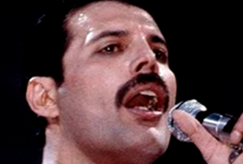
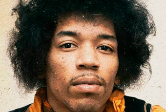
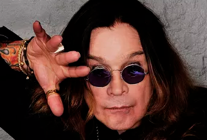

Lendas do Rock!
Conheça os ícones que moldaram o gênero e revolucionaram a música. Nosso blog é uma homenagem a essas lendas imortais. Sinta a essência do rock e mergulhe nas histórias que mudaram tudo. Prepare-se para uma jornada inesquecível pelo coração do rock 'n' roll! 😎🎶
• Freddie Mercury
Freddie Mercury, o lendário vocalista do Queen, deixou sua marca na história da música. Nascido em Zanzibar, em 1946, como Farrokh Bulsara, ele se tornou uma das figuras mais carismáticas e influentes do rock.
Com sua poderosa voz, presença de palco cativante e talento para compor melodias atemporais, Mercury conquistou milhões de fãs em todo o mundo. Seu alcance vocal impressionante, que abrangia quatro oitavas, permitia-lhe transitar entre notas altas e baixas com facilidade surpreendente.
Além de sua notável carreira musical, uma curiosidade fascinante sobre Freddie Mercury é que ele possuía um dente extra no lado direito da boca, o que contribuiu para seu visual único e distintivo. Em vez de corrigir esse traço, ele escolheu mantê-lo intacto, afirmando que isso fazia parte de quem ele era.
Freddie Mercury viveu intensamente, tornando-se um ícone da música e uma inspiração para muitos artistas subsequentes. Sua energia, talento e legado continuam a ressoar, e ele é lembrado como um dos maiores vocalistas de todos os tempos.
• Jimi Hendrix
Jimi Hendrix, nascido em 1942, foi um dos guitarristas mais influentes e inovadores da história do rock. Sua habilidade única no instrumento, juntamente com seu estilo de tocar revolucionário, estabeleceu novos padrões e inspirou gerações de músicos.
Nascido em Seattle, nos Estados Unidos, Hendrix se destacou não apenas pela sua técnica exímia na guitarra, mas também por sua capacidade de explorar e experimentar novos sons. Ele foi pioneiro no uso de efeitos como distorção, feedback e wah-wah, elevando a guitarra elétrica a novas alturas.
Uma curiosidade intrigante sobre Jimi Hendrix é que ele era canhoto e tocava uma guitarra de destros, simplesmente invertemdo as cordas. Essa peculiaridade contribuiu para o seu estilo de tocar distintivo, permitindo-lhe criar acordes e solos únicos que se tornaram marcas registradas de suas músicas.
Hendrix também era conhecido por suas performances explosivas no palco, incendiando sua guitarra e criando momentos icônicos de pura energia e emoção. Infelizmente, sua carreira foi interrompida precocemente, com sua morte em 1970 aos 27 anos de idade. No entanto, o legado musical de Jimi Hendrix perdura e continua a influenciar músicos e amantes do rock até os dias de hoje. Sua genialidade e ousadia abriram novos caminhos no mundo da música, tornando-o um verdadeiro ícone do rock.
• Ozzy Osbourne
Ozzy Osbourne, também conhecido como "O Príncipe das Trevas", é uma figura icônica do rock e do heavy metal. Nascido em 1948, na Inglaterra, ele ganhou fama como vocalista da banda Black Sabbath e, posteriormente, por sua bem-sucedida carreira solo.
Com sua voz única e marcante, Ozzy Osbourne se destacou por sua presença de palco intensa e performances energéticas. Sua música, muitas vezes mergulhada em temas obscuros e sombrios, capturou a imaginação de uma geração de fãs que se identificavam com sua expressão artística ousada e provocadora.
Uma curiosidade fascinante sobre Ozzy Osbourne é que ele é frequentemente chamado de "Madman" (homem louco) devido a incidentes infames que ocorreram ao longo de sua carreira. Um dos mais notórios aconteceu em 1982, quando ele mordeu a cabeça de um morcego vivo durante um show. Embora tenha afirmado que pensou que era um morcego de plástico, essa ação inusitada se tornou parte da lenda e da persona excêntrica de Ozzy.
Além de sua persona excêntrica, Ozzy Osbourne também enfrentou desafios pessoais ao longo dos anos, mas conseguiu superá-los e se tornar um ícone da música. Sua influência no cenário do rock e sua contribuição para o gênero são inegáveis, tornando-o um dos artistas mais admirados e reverenciados da história do rock.